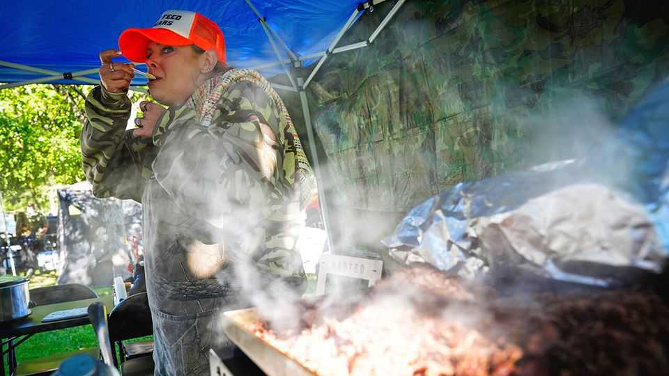

What a rural American cooking contest reveals about food culture
The “Roadkill Cook-Off” shows that wild game can be wildly tasty

Oct 1st 2026
West Virginia’s official motto is montani semper liberi: mountaineers are always free. It is the only state whose boundaries fall entirely within the Appalachian mountains, offering plenty of isolated valleys where people can find seclusion from the modern world (and sometimes the law). But with great freedom comes great distances from grocery shops, not to mention a legacy of poverty. Appalachian cuisine prizes thrift and resourcefulness: hunting, drying and pickling all feature heavily.
For 35 years Pocahontas County—one of the state’s biggest and least populated—has honoured those traditions with an annual “Roadkill Cook-Off”. The festival draws around 14,000 people to a tiny town tucked deep in the mountains, some from as far afield as Rhode Island and Colorado. Don’t worry, nobody is served lapin à la Michelin. The animals do not have to be physically scraped off a highway: they just have to be the sorts of creatures commonly hit by cars on rural roads.
The event reveals three things about food culture, in America and elsewhere. First, even in historically poor regions like Appalachia, abundance reigns. A few generations ago, Appalachians would have eaten roadkill out of necessity; today it is by choice. Delicious ingredients are everywhere—if you know where to look for them and have a bit of imagination.
In previous years, cooks have served up elk, snakes, snapping turtle and opossum. At the latest edition on September 26th, contestants made ground buck with cabbage and braised deer with pancakes and beetroot-cream sauce. The day’s best dish was a rustic and comforting wild-boar stew with apples and rosemary. The most unexpected was barbecued bear over macaroni—which was slightly dry, but since the chef said she “found it in a ditch off Route 42”, better overcooked than under.
The festival is also a reminder that wastefulness should be unpalatable to chefs and eaters alike. “Nose-to-tail cooking” is now fashionable; it is no longer unusual to see bone marrow, liver or sweetbread on the menu of an eatery in a big city. (The term was coined in the mid-1990s by Fergus Henderson, co-founder of St John, a meaty restaurant in London.) But as the cook-off attests, people have long been making the most of every bit of animal. When entrails are prepared with care, you’ll want to eat the heart out.
The final lesson is that there are good cooks everywhere. The festival leans into stereotypes of West Virginians as hillbillies who eat what they can peel off the tarmac. It also subverts them. The team that cooked the boar stew called themselves the Coal Hollow Brothers, and drank a homemade concoction called “Swamp Water” from a plastic jug. But they are in fact talented wild-game cooks and produced a dish that could grace the menu of any urban restaurant. Even a haughty gourmet would try it and think: “Give me boar.” ■